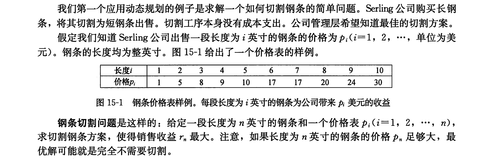
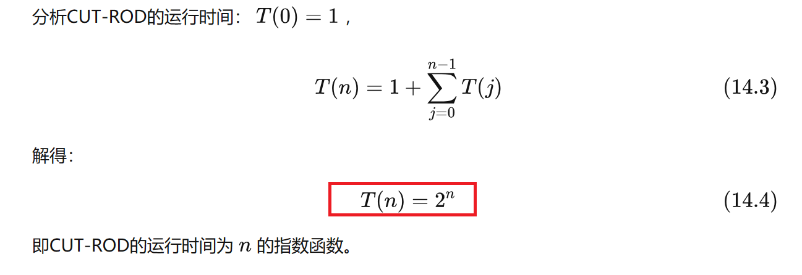
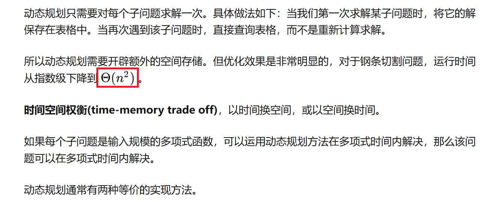
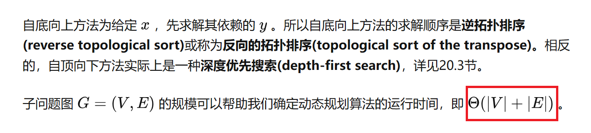
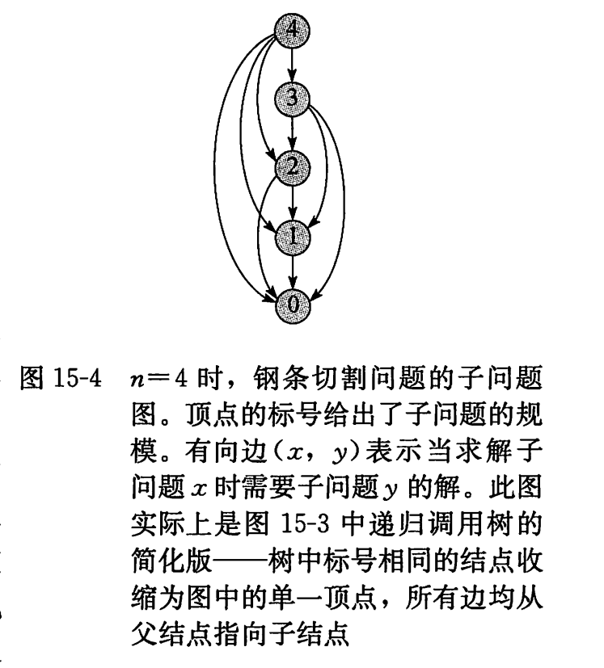

算法导论笔记
其中1-14章的内容在《数据结构》这本书中已经涵盖,此处从15章开始整理。
代码参考
GitHub：500个常用数据结构，算法，算法导论
WiKi：OI Wiki - OI Wiki
15章 动态规划
15.1 钢条切割

长度为 n 英尺的钢条一共有
最优子结构：

1.递归（自顶向下）求解
算法思路：
71CUT-ROD(p, n)2 if n == 03 return 04 q = -∞5 for i = 1 to n6 q = max{q, p[i] + CUT-ROD(p, n - i)}7 return q（图为n=4时的递归树，最大利润的切割为4=2+2，r=5+5=10）
采用递归的方式遍历每一种可能，并从树根取每种可能的每一层的最大值（即每种路径中最大值），此方式掉率很低。
时间复杂度

2.动态规划求解

（1）带备忘的自顶向下法：
此方法仍按自然的递归形式编写过程，但过程会保存每个子问题的解(通常保存在一个数组或散列表中)。当需要一个子问题的解时，过程首先检查是否已经保存过此解。如果是，则直接返回保存的值，从而节省了计算时间;否则，按通常方式计算这个子问题。我们称这个递归过程是带备忘的(memoized)。因为它“记住”了之前已经计算出的结果。
算法
171MEMORIZED-CUT-ROD(p,n)2let r[0...n] be a new array3for i = 0 to n //新建一个存储的数组4 r[i] = -∞5return MEMORIZED-CUT-ROD-AUX(p,n,r)6
7MEMORIZED-CUT-ROD-AUX(p,n,r)8if r[n] >= 0 //检查所需的值是否已知9 return r[n]10//计算所需值q 11if n==0 12 q = 013else q = -∞14 for i = 1 to n15 q = max(q,p[i]+MEMORIZED-CUT-ROD-AUX(p,n-i,r))16r[n] = q //将q存入r[n]17return q代码
x
1int memorizedCutRodAux(int p[], int n, int r[])2{3 int q;//最大收益值4 if (r[n] >= 0)5 return r[n];//检查所需值是否已知6 if (n == 0)7 q = 0;//n=0时不会有收益8 else9 {10 q = -1;11 for (int i = 0; i < n; ++i) //求解每一层最大值12 q = max(q, p[i] + memorizedCutRodAux(p, n - i - 1, r));13 }14 r[n] = q; //保存每一层最大值15 return q;16}17
18int memorizedCutRod(int p[], int n)19{20 int *r = new int(n+1);21 for (int i = 0; i <= n; ++i)22 r[i] = -1;23 return memorizedCutRodAux(p, n, r);24}（1）自底向上法：
这种方法一般需要恰当定义子问题“规模”的概念，使得任何子问题的求解都只依赖于“更小的"子问题的求解。因而我们可以将子问题按规模排序，按由小至大的顺序进行求解。当求解某个子问题时，它所依赖的那些更小的子问题都已求解完毕，结果已经保存。每个子问题只需求解一次， 当我们求解它(也是第一次遇到它)时， 它的所有前提子问题都已求解完成。
算法
91BOTTOM-UP-CUT-ROD(p, n)2 let r[0 : n] be a new array // will remember solution values in r3 r[0] = 04 for j = 1 to n // for increasing rod length j5 q = -∞6 for i = 1 to j // i is the position of the first cut7 q = max{q, p[i] + r[j - i]}8 r[j] = q // remember the solution value for length j9 return r[n]代码
xxxxxxxxxx1int BottomUpCutRod(int p[], int n)2{3 int* r = new int(n + 1); //申请存储中间结果的数组表，打表4 r[0] = 0;5 if (n == 0) {6 return 0;7 }8 for (int j = 1; j <= n; j++) {9 int q = INT_MIN; //类似于负无穷，q用于存储此次的最大利益10 for (int i = 1; i <= j; i++) { //第一次切割的地方11 q = max(q, p[i-1] + r[j - i]);12 }13 r[j] = q;14 }15 return r[n];16}
3.子问题图

4.重构解
过程MEMOIZED-CUT-ROD和BOTTOM-UP-CUT-ROD只返回了最优解的值，但并未返回最优解本身（切割后每段钢条的长度列表），我们利用扩展动态规划算法，对每个子问题不仅保留最优解的值(value)，还保留对应的最优解的选择(choice)方案，利用这些信息，就能够输出最优解。BOTTOM-UP-CUT-ROD的扩展版EXTENDED-BOTTOM-UP-CUT-ROD的伪代码如下：
x
1EXTENDED-BOTTOM-UP-CUT-ROD(p, n)2 let r[0 : n] and s[1 : n] be a new array3 r[0] = 04 for j = 1 to n // for increasing rod length j5 q = -∞6 for i = 1 to j // i is the position of the first cut7 if q < p[i] + r[j - i]8 q = p[i] + r[j - i]9 s[j] = i // best cut location so far for length j10 r[j] = q // remember the solution value for length j11 return r and s最后输出完整的切割方案，PRINT-CUT-ROD-SOLUTION的伪代码如下：
xxxxxxxxxx51PRINT-CUT-ROD-SOLUTION(p, n)2 (r, s) = EXTENDED-BOTTOM-UP-CUT-ROD(p, n)3 while n > 04 print s[n] // cut location for length n5 n = n - s[n] // length of the remainder of the rod15.2 矩阵链乘法